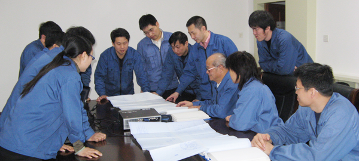

一、设计部简介
哈尔滨电气动力装备有限公司设计部成立于2007年，由具有50多年设计经验的原哈尔滨电机厂电机事业部设计室、特电事业部设计室组建而成，自成立以来，设计部按照自主研发、引进消化、博采众长、创新跨越的技术路线，发挥企业技术创新的主体作用，以市场为导向，坚持产学研合作，在保证常规产品研制、改进的基础上加大高新技术的开发与应用，在核电站主泵及主泵电机的关键技术上实施重点突破，尤其是对代表先进的三代核电AP1000主泵电机的技术引进、转化、吸收、再创新，实现了企业的跨越式发展。
二、组织结构
哈尔滨电气动力装备有限公司设计部是公司的核心技术部门，对外承担与市场部合作，进行市场拓展、发展业务的责任，对内承担公司各项产品的设计研发工作，包括新产品开发、科研计算、应用技术等工作。
设计部现设有4个室，包括核电电机设计室，泵设计室，电机设计室，专业设计室，按照专业分工负责完成核电电机设计，核泵设计，直流电机设计，交流电机设计，设计计算，电机包装设计等工作。
三、人才队伍
设计部现有员工98人，其中，高级工程师10人，工程师40人，近几年，公司注重科技人才培养，一大批高学历人才加入，目前，设计部现有员工中，硕士30人，本科60人。
四、设计能力
（一） 产品简介
目前，主导产品有电动机、发电机、水泵等，主要包括以下三大类：通用类主要包括大中型交流同步、交流异步、直流电机等电动机，中小型水轮发电机、风力发电机、柴油发电机等发电机，锅炉炉水循泵电机、湿式电机、屏蔽电机等产品；核电类产品主要包括二代加和三代核电主泵、主泵电机、核电常规岛用给水泵及循泵等产品；军工类产品主要包括特种电机及舰船动力装置等。产品主要分布在核电、冶金、火电、矿山、水力、石化、军工、科研等行业，并出口到巴基斯坦、印度、越南、印尼、秘鲁、朝鲜、乌克兰、尼泊尔、缅甸等多个国家。
（二）产品设计和研发能力
1、异步电动机
近年来我们开发了6kV，10kV等级的Y、YKS、YKK、YR、YRKS，YRKK系列异步电动机，产品规格更加完整，能满足各种行业的不同需求。
专为火电站配套用辅机开发的高压Y系列及派生的YKK、YKS、YTM、YHP、YMPS系列异步电动机，采用美国西屋公司技术，并结合BBC及西门子公司的先进技术，其技术性能充分满足了不同规模电厂的需求。其中专为火电站给水泵设计的5500kW异步电动机受到广大用户的好评，至今已经生产了上百台。
2、交流变频调速电动机
早在1985年，我公司就开始对交流调速电动机进行了研究和开发，并于1992年生产制造出了我国第一台交交变频同步电动机和第一台交交变频异步电动机。开创了国内生产制造交流变频调速电机的先河。二十多年来，公司一直致力于变频调速电机的研究，并积极寻找机会争取国际间的合作，引进了当今世界最先进技术并不断加大自身的技术装备改造。哈电的大型交流变频调速电机的技术是先进的、制造工艺是相当成熟的。积累了丰富的设计制造经验，先后为国内提供了宝钢 1580 、鞍钢 1780 、攀钢 1450 、本钢 1700、武钢2250等多条轧线提供了200多台大型交流变频调速电动机,热连轧主传动电机。其制造技术和产量居国内第一，达到世界领先地位。
3、直流电动机
早在20世纪50年代就开始生产大、中型直流电动机，产品遍布我国各大钢铁企业，特别是80年代通过从国外引进先进技术，结合我公司自己的经验，生产制造了诸如宝钢2050工程的大型直流电动机，以及近年中宽带生产线用5500KW电机等。
到目前为止，公司利用先进的的技术、成熟的制造工艺已经为我国的冶金行业提供了200余台大型主传直流电动机。通过几十年的努力，我公司在大型直流电动机方面取得了十分可喜的业绩。
4、湿式电动机
湿式电机是我厂80年代引进德国KSB公司技术生产制造的一种特殊的三相鼠笼异步电动机，主要用于300MW、600MW亚临界控制循环锅炉炉水泵及中小型核电站回路循环系统。
湿式电机引进后，我们先后进行了设计转化，攻克了机壳铸件、电磁线、轴承等材料国产化的关键技术，使国产化达到98%以上。
目前，我公司已设计并制造出27000kW 4 极无刷励磁同步电动机，19000kW、4极高炉风机异步拖动电机。
近年来，公司先后与美国西屋公司、德国西门子公司、日本三菱与东芝公司、加拿大GE公司等国外先进公司进行合作，引进、吸收、消化国外公司的先进技术，加快了企业发展和技术进步的步伐。其中大中型同步电机、异步电机、直流电机、交交变频调速电机产品为国内先进水平，具有较强的竞争力。
5.核电产品
在二代或二代半核电主泵电机（轴封泵电动机）上，我们具备自主独立设计、制造能力，拥有核主泵电机设计的软件，以及设计开发和工艺人员队伍。该类主泵电机的容量和重量，处在我公司电动机品种的中间类型，现有的生产设备完全满足电机的制造和试验任务，正常情况下，每年可提供8--10台主泵电机商品的能力。
在三代核电主泵电机（屏蔽电动机）上，我们具备一定的技术储备，在电磁计算、结构设计、应力分析与计算、轴系稳定性设计、 压力边界锻件材料、电机的冷却设计、绝缘技术、氦气检漏、屏蔽套焊接技术等方面有着大量的工程经验，这些方面在国内处在领先地位，这恰是美国EMD公司与HPC的合作基础。
在屏蔽主泵电机制造能力上，我们在机械加工、冲片装压、下线、线圈制造、窄间隙焊接、工作场地等方面已满足EMD要求，但在EMD专有的工艺诀窍方面，与美方相比尚有差距，需要三代核主泵电机的技术转化和改造来消除差距，这样能够形成每年可提供6--8台屏蔽式主泵电机成品的能力。
6、分析计算能力：
（1）ANSYS13.0软件是集结构、热、流体、电磁场、声场和耦合场分析于一体的大型通用有限元分析软件。
（2）计算机程序PROD127是西屋公司用于计算汽轮发电机组临界转速的程序，是我公司目前使用的计算汽轮发电机、水轮发电机组和电动机临界转速的通用程序。
（3）EMDAC-FEA是引进AP1000核主泵时由EMD公司提供，是集结构、热、流体及耦合场分析于一体的大型通用有限元分析软件，可以进行温度场分析，静力分析，模态分析，谐响应分析，瞬态分析，以及屈曲分析等。
（4）ROMAC - MAXBRG（径向轴承性能计算）软件是由维吉尼亚大学开发研制的，该软件有以下优点：
该软件可用于轴承设计、轴承性能计算等多方面；
可计算普通轴承、可倾瓦轴承等多种轴承形式；
可用于计算不同转速下轴承的水膜刚度及水膜阻尼；
可计算得到轴瓦变形情况、压力分布；
可计算得到静平衡位置；
可得到轴套最大温度、最小水膜厚度、流速、摩擦损耗等数据。
经过与大量试验数据对比修正，该软件已经能够得到与实际情况极为接近的轴承性能参数，为转子动力学的准确计算提供了很大的支撑。
（5）ROMAC - THRUST（推力轴承计算）软件也是由维吉尼亚大学开发研制的，该软件有以下优点：
1）可用于计算12种不同类型的推力轴承性能；
2）可考虑温度效应及复杂的变形情况，同时将旋转转动惯量考虑进了雷诺方程，使得计算更加符合实际；
3）可计算得到压力分布；
4）可得到运行工况下水膜厚度、水膜温度分布、平衡块温度分布、功耗、必须的流量、平衡块变形等参数； 经过与大量试验数据对比修正，该软件已经能够得到与实际情况极为接近的轴承性能参数，为转子稳定性分析的准确计算提供了很大的支撑。